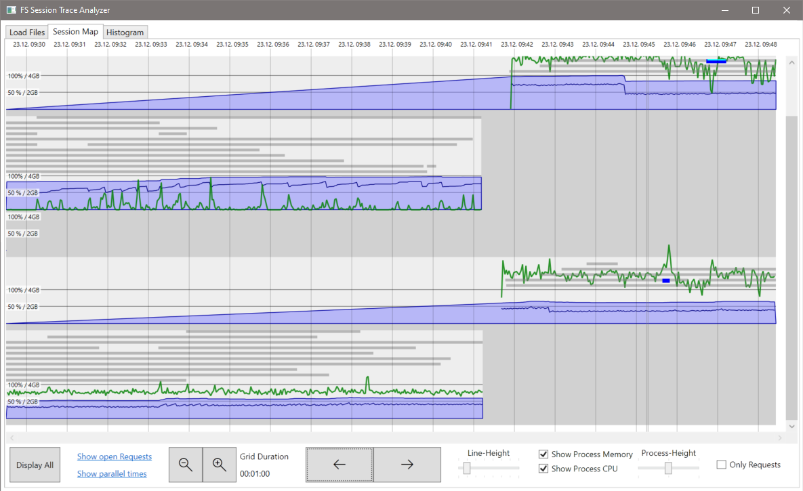

Session Trace Analyzer
Das Session-Trace protokolliert detailliert Sessions, einzelne Requests und lang dauernde Sql-Statements in Form von SessionTrace-Dateien. Aktiviert werden kann der Session-Trace im Run Wizard, Publish Wizard oder Publish2Go-Wizard. Mit dem Session Trace Analyzer können diese Daten visualisiert und ausgewertet werden.
Im Gegensatz zum Session Logging, welches die Daten aggregiert, speichert das Session-Trace exakte Start- und Ende-Zeiten für jede einzelne Aktion. Darüber hinaus werden CPU-Auslastung und RAM-Verbrauch protokolliert. Mit dieser Aufbereitung ist es möglich potentielle Probleme wie z.B. Transaktions-Blockaden oder hohen Ressource-Verbrauch auf einzelne Sessions und sogar Requests einzuschränken.
